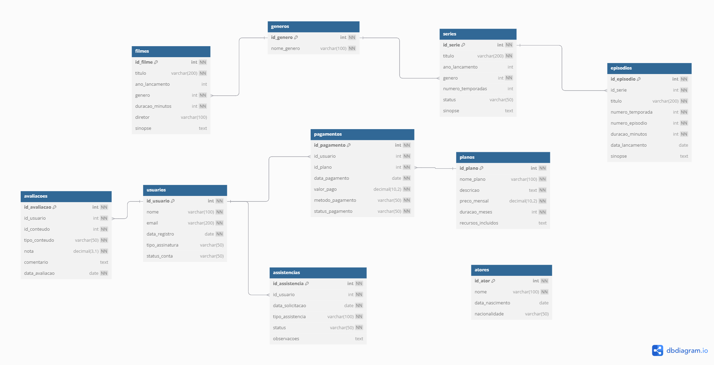

Modelo Relacional¶
A estrutura inicial do banco de dados do projeto contém 10 tabelas, sendo elas as seguintes:¶
assistencias: Armazena informações sobre assistências solicitadas pelos usuários, incluindo seu tipo, status e data de solicitação.pagamentos: Registra os pagamentos realizados pelos usuários, associados aos planos, com valores, métodos e status.planos: Detalha os planos disponíveis, incluindo preço mensal, duração e recursos incluídos.atores: Armazena informações sobre atores, como nome, data de nascimento e nacionalidade.avaliacoes: Contém avaliações feitas pelos usuários sobre filmes ou séries.episodios: Registra os episódios de séries. Cada episódio contém título, temporada, número, duração e sinopse.series: Detalha as informações das séries, como título, gênero, número de temporadas e status.filmes: Inclui informações sobre filmes, como título, gênero, duração, diretor e sinopse.generos: Lista os gêneros disponíveis, como ação, comédia, drama, entre outros.usuarios: Registra informações sobre os usuários, como nome, email e tipo de assinatura.

Estrutura das Tabelas¶
1. assistencias¶
Descrição: Armazena registros de assistências solicitadas por usuários.
Colunas:
id_assistencia(PK): Identificador único da assistência.id_usuario(FK): Relacionamento com o usuário que solicitou a assistência.data_solicitacao: Data da solicitação de assistência.tipo_assistencia: Tipo de assistência solicitada.status: Status atual da solicitação (ex.: pendente, concluída).observacoes: Detalhes adicionais da solicitação.
2. pagamentos¶
Descrição: Armazena os pagamentos realizados pelos usuários.
Colunas:
id_pagamento(PK): Identificador único do pagamento.id_usuario(FK): Referência ao usuário pagante.id_plano(FK): Relacionamento com o plano associado ao pagamento.data_pagamento: Data em que o pagamento foi realizado.valor_pago: Valor pago pelo usuário.metodo_pagamento: Método utilizado (ex.: cartão, boleto).status_pagamento: Status do pagamento (ex.: efetuado, pendente).
3. planos¶
Descrição: Detalha os planos de assinatura disponíveis.
Colunas:
id_plano(PK): Identificador único do plano.nome_plano: Nome do plano.descricao: Descrição detalhada do plano.preco_mensal: Valor mensal do plano.duracao_meses: Duração média do plano, em meses.recursos_incluidos: Lista de recursos associados ao plano.
4. atores¶
Descrição: Contém as principais informações sobre os atores.
Colunas:
id_ator(PK): Identificador único do ator.nome: Nome do ator.data_nascimento: Data de nascimento.nacionalidade: Nacionalidade do ator.
5. avaliacoes¶
Descrição: Registra as avaliações realizadas pelos usuários sobre conteúdos.
Colunas:
id_avaliacao(PK): Identificador único da avaliação.id_usuario(FK): Referência ao usuário que avaliou.id_conteudo: Identificador do conteúdo avaliado (filme ou série).tipo_conteudo: Especifica o tipo do conteúdo (ex.: filme, série).nota: Nota atribuída pelo usuário.comentario: Comentários ou opinião do usuário sobre o conteúdo.data_avaliacao: Data em que foi realizada a avaliação.
6. episodios¶
Descrição: Detalha os episódios das séries.
Colunas:
id_episodio(PK): Identificador único do episódio.id_serie(FK): Referência à série correspondente.titulo: Título do episódio.numero_temporada: Número da temporada à qual pertence.numero_episodio: Número do episódio dentro da temporada.duracao_minutos: Duração do episódio, em minutos.data_lancamento: Data de lançamento do episódio.sinopse: Resumo do episódio.
7. series¶
Descrição: Contém informações gerais sobre as séries.
Colunas:
id_serie(PK): Identificador único da série.titulo: Título da série.ano_lancamento: Ano em que a série foi lançada.genero(FK): Relacionamento com a tabela de gêneros.numero_temporadas: Quantidade total de temporadas.status: Status atual da série (ex.: em andamento, finalizada).sinopse: Resumo geral da série.
8. filmes¶
Descrição: Registra os detalhes sobre filmes disponíveis.
Colunas:
id_filme(PK): Identificador único do filme.titulo: Título do filme.ano_lancamento: Ano de lançamento do filme.genero(FK): Relacionamento com a tabela de gêneros.duracao_minutos: Duração do filme, em minutos.diretor: Nome do diretor do filme.sinopse: Breve resumo da trama do filme.
9. generos¶
Descrição: Lista os gêneros de filmes e séries.
Colunas:
- id_genero (PK): Identificador único do gênero.
- nome_genero: Nome do gênero (ex.: ação, drama, comédia).
10. usuarios¶
Descrição: Contém informações gerais sobre os usuários cadastrados.
Colunas:
- id_usuario (PK): Identificador único do usuário.
- nome: Nome completo do usuário.
- email: Endereço de email do usuário.
- data_registro: Data de registro no serviço.
- tipo_assinatura: Tipo do plano contratado pelo usuário.
- status_conta: Status atual da conta (ex.: ativo, suspenso).